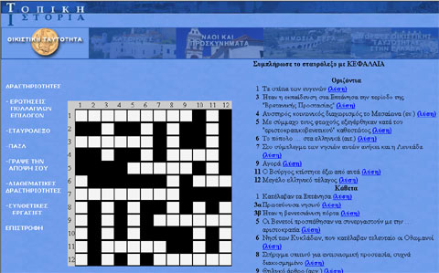

| Εγχειρίδιο Χρήσης |
6.2 ΣταυρόλεξοΣτη δραστηριότητα του σταυρόλεξου ο χρήστης μπορεί να συμπληρώσει και να ελέγξει τις απαντήσεις του στο σταυρόλεξο. Το σταυρόλεξο συμπληρώνεται μόνο με κεφαλαία γράμματα. Ο χρήστης κάνει κλικ στο τετράγωνο που επιθυμεί και συμπληρώνει το γράμμα. Για γρηγορότερη πλοήγηση στο σταυρόλεξο, ο χρήστης αφού κάνει κλικ στο τετράγωνο, μπορεί πατώντας το πλήκτρο 'Tab' να μεταφερθεί στο αμέσως επόμενο τετράγωνο. Κάνοντας κλικ στη λέξη «λύση» εμφανίζεται αυτόματα η σωστή απάντηση στα αντίστοιχα τετράγωνα. Με κλικ στη φράση «Έλεγξε την ορθότητα του σταυρόλεξου» σημειώνονται με κόκκινο τα τετράγωνα, στα οποία υπάρχει λάθος. Ο χρήστης μπορεί να μεταφερθεί σε επόμενο σταυρόλεξο κάνοντας κλικ στο κουμπί «Επόμενο» στο κάτω και δεξιά μέρος της σελίδας.  Εικόνα 6.2.1 Σταυρόλεξο |